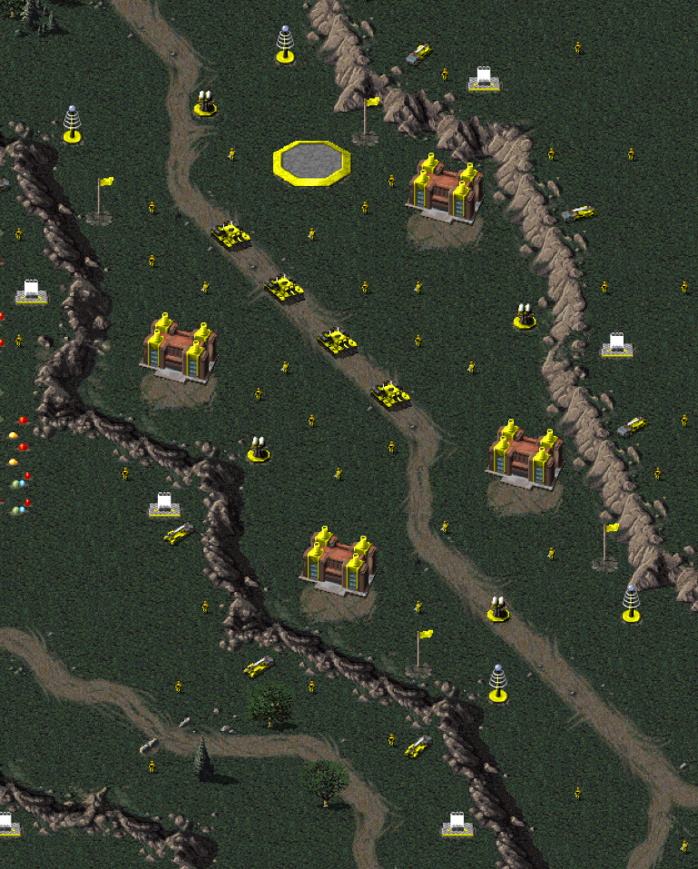
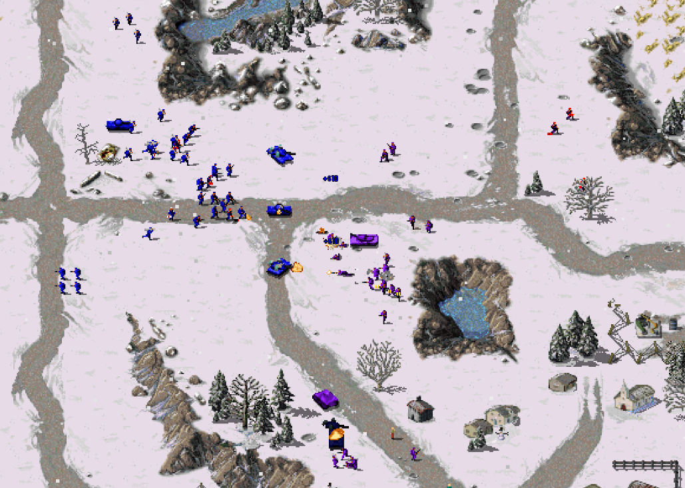

The Iris War
Concept
The concepts for the original sides of the Iris War started when I came up with the Penta Elite Force, a rogue military that was reminiscent of the Allies from Command and Conquer: Red Alert 3. I became attracted to it and decided to give it a couple of companion factions and a backstory. Thus, I created the Iris Alliance, which fell apart after a long span of time which lead to the Iris War. The rest of the story is being fleshed out as I create new concepts and missions for it. Some fo this has included the endgame to the first Iris War story, leading to the formation of the New Iris Alliance. More on that to come!
The lore of the war itself is on the Github page and reads as follows:
For over 100 years, the capital nations of the three major continents - North America, Europe, and Asia - protected the world from harmful and undisciplined nations. The alliance, which came to be known as the Iris Alliance, came together by three major leaders and served to protect the world for all of time. However, by the end of the 20th century, the perspectives of people began to diverge among the different leaders, and the "three leaders" began to disagree. By the next generation, as a global crisis involving the Iris and a group of warlords known as the Triage ended with Iris reigning victorious and stabilizing the region, the three leaders were in total disagreement, and were beginning to split apart. Within a year, the Iris Alliance would see the first of the three leaders - Ryan Harmana - leave along with a number of people from the Alliance. The groups formed together would form the Penta Elite Force, and began to pressure the Iris. Soon after, the second leader - Samantha Solstice - also removed herself along with her group, and they would form the Nitro Orthodoxy, going to war against the Penta and the Iris. The leader who remained - Trevor Shade - would repurpose the Iris into the Nations of Shade, and begin to fight the Penta and Nitro head-on. The three sides, now in an utter dispute, would put the world in a darkened state with no end in sight...Most of the events of the war wil refer back to this as their basis. There may be more details added later as questions arise, but I needed a starting point... 
The project is being updated frequently and can be found at the Github page. Be sure to check back often!